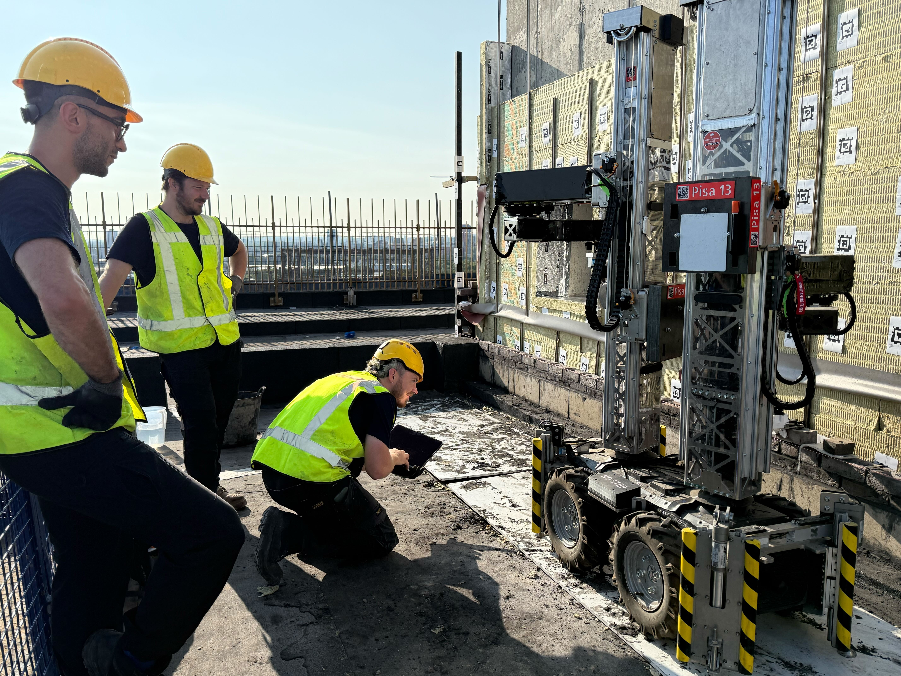
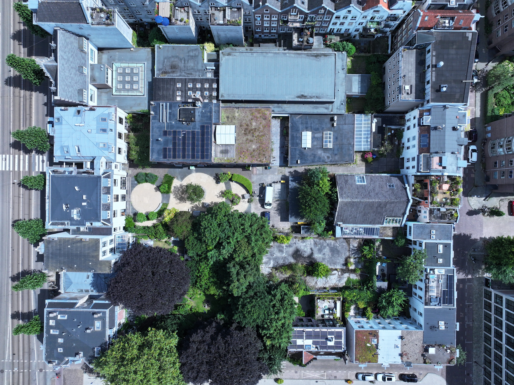

Entering new markets | Country Manager, UK
Why we’re hiring our first Country Manager in the UK, and what the role owns.

I work at the intersection of talent, people operations and execution — scaling high-performing teams, from 0→1, in seed, series A, B, scale-up and big tech environments.

I’m Chief of Staff at Monumental in Amsterdam, where we’re automating on-site construction with robotics and software. Previously I led talent at Meta, Meta AI Research, OakNorth AI, Sphere (acquired by Twitter), and Polystream (acquired by Mythical Games) in London.
Why we’re hiring our first Country Manager in the UK, and what the role owns.

Team growth, funding, deployments, and a world-first: robots laying bricks on-site.
Growth update and new roles — this post picked up traction on LinkedIn and Reddit.

Why this is still “just software”, plus a recent on-site deployment.